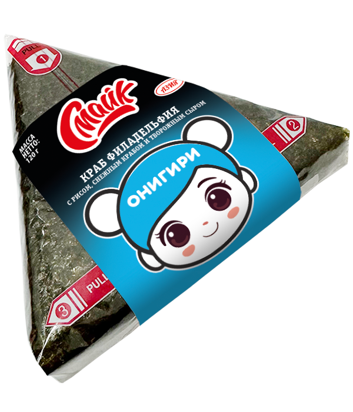

Онигири краб филадельфия

Состав:
рис, снежный краб, творожный сыр, нори.
Масса нетто:
120 г.
Пищевая и энергетическая ценность в 100 г продукта (средние значения):
Белки
– 4,1 г.
Жиры
– 7,2 г.
Углеводы
– 31 г.
Калорийность
– 205 ккал / 863 кДж.
Закрыть окно